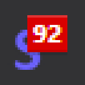
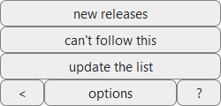
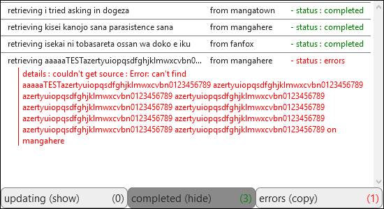
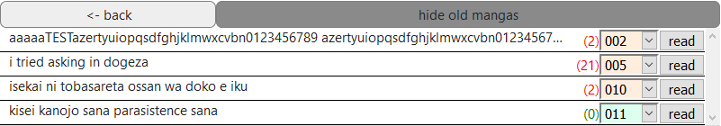

How does it works?
The Browser Action is your entry point :
The Icon

- On the icon is displayed the number of mangas that have at least one chapter you have yet to read (no matter how many unread chapters a manga has, it will be counted as one).
- When you click it, it will bring up the popup menu.
- Instead, to open the popup, use the page menu (generally triple dot in the top right corner), scroll it down to your addons list, and tap "MangasSub".It is unavailable on firefox for android !
The PopUp consists of different parts :
The Menu

- new releases : will take you to the mangas list.
- It can also display "already followed" (you're already following this manga) or "can't follow this" (you're not on a manga page on a supported website).follow this manga : it will add a manga to your list.
- Please be patient though, as depending on the number of mangas you're trying to update at once, it can take quite a while and make your browser quite unresponsive.update the list : will start updating your mangas list (during this time, it will display "..."). You can close the popup during the update, it will continue in the background.
- < : will open the console on the left of the menu. options : will open the options page in a new tab. ? : will open the help page (this one) in a new tab.
The Console

- It will show you what's happening while you're updating.
- updating : shows/hides the mangas you have started updating, and on which website.
- completed : shows/hides the mangas that have successfully been updated.
- errors : copies (ctrl+c) the errors for easy reporting.
The Mangas List

- The part you will be most interested in. It display your list of mangas (only those with unread chapters by default).
- <- back : will take you back to the menu
- show all mangas : (or hide old mangas) shows/hides the mangas which you have fully read.
- Each line represents a manga (name, number of unread chapters, and ordered with unread stuff (ascending order on red background) at the top, followed by stuff already read (descending order on green background)the list of chapters, followed by the It will open the selected chapter in a new tabread button at the end).
The Options Page gives you access to two main functions :
The Options
- By default it is off. Be careful here, as using it for general use will significantly increase update times. Recommended use is to turn it on, manually update the mangas that have a leap in chapters through the options page list, and then turn it off.check all sites : lets you choose whether to check only a manga's preferred website when looking for new chapters, or all available websites.
- navigation bar : will let you navigate between It only directs to chapters the extension is aware of (ie : chapters that have been found during an update or while reading). Some buttons may not appear when not applicable (for instance, previous when the previous chapter is also the first).chapters (first, previous, next and last) when reading a subscribed manga.
- export mangas list : will export your list to a local json file.
- click [choose a file] to select a source, then tick either merge (will merge the import with the current data, keeping whatever chapter is already read in either one as read in the final result) or replace (will wipe current data to replace it with the import), then click "import mangas list".import mangas list : will import data saved in a local file.
- That list can be filtered using the search field.manage your subscriptions : will open your complete manga list. It offers more options than the popup list.
The Complete Mangas List
- It offers the same possibilities as the popup list, and more !
- The By default, it is the site on which you registered that manga.website select will let you choose the preferred site on which to update that manga (the one used when "check all sites" is disabled).
- Particularly recommended when you notice missing chapters (jumping from 20 to 26 for instance), in combination with "check all sites". will immediately update that manga (and only that one).
- will mark all chapters of a manga as read.
- It is highly recommended to disable the update of mangas that are completed to spare time when updating.
 will toggle the update state. when red, the manga won't be updated with the rest of the list.
will toggle the update state. when red, the manga won't be updated with the rest of the list.
- BE CAREFUL, there is no going back ! click it aaand it's gone. will delete the manga from your list !